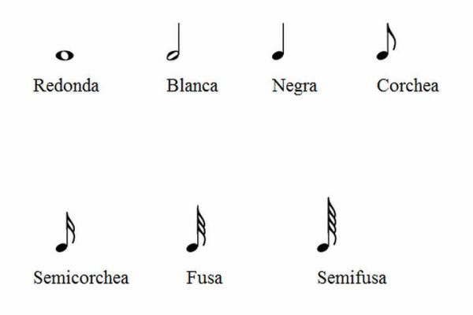
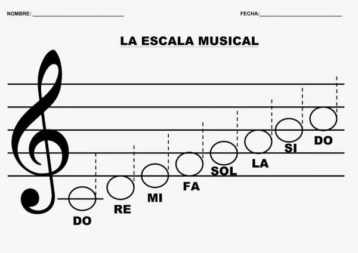
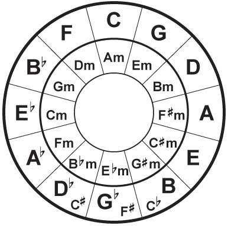
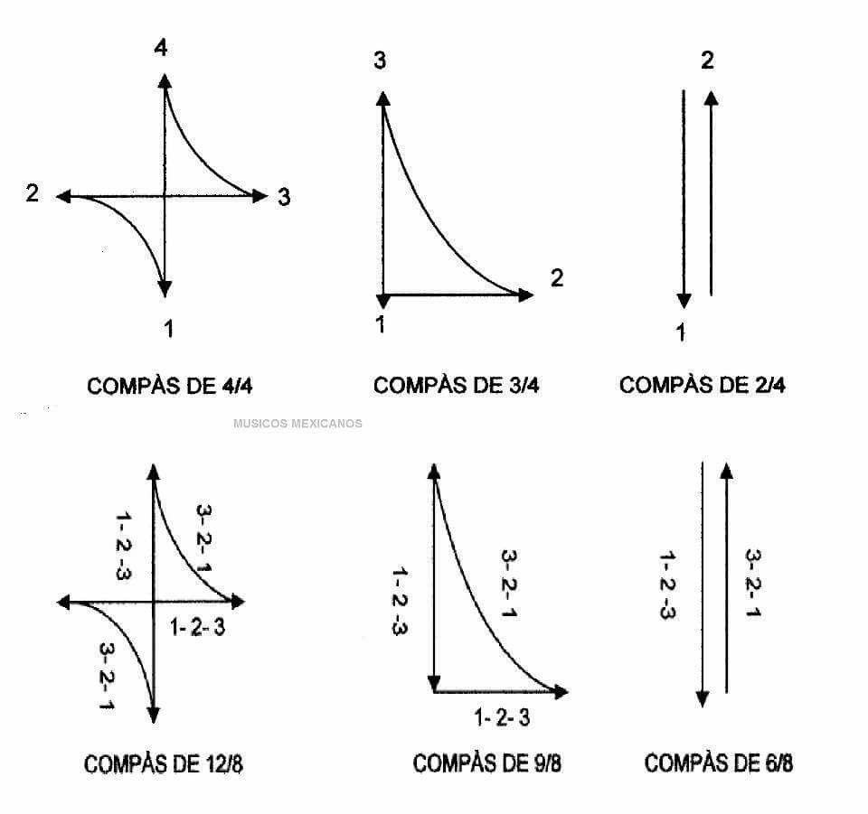
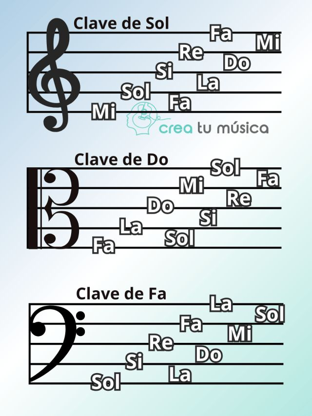

EL proposito de la siguiente pagina web es abordar de manera muy superficial algunos conceptos basicos de la teoria musical, pasa y disfruta :D
 La música se compone de varios elementos esenciales. El ritmo es el patrón de sonidos y silencios en el tiempo. La melodía es una sucesión de notas que forman una línea musical reconocible.
La armonía se refiere a la combinación de diferentes notas tocadas simultáneamente. La textura describe cómo se combinan las distintas líneas musicales en una composición.
  Los instrumentos musicales se dividen en familias: cuerda, viento, percusión y teclado. Cada familia tiene características únicas que contribuyen al sonido de una orquesta.
El ritmo es el patrón de duración de los sonidos y silencios en la música.
La melodía es una secuencia de notas que se perciben como una unidad.
La armonía es la combinación de notas que suenan simultáneamente para apoyar la melodía.
El compás organiza el ritmo en grupos de tiempos.
Una escala es una serie de notas ordenadas por altura.
Las notas naturales son las siete notas musicales básicas: Do, Re, Mi, Fa, Sol, La y Si.
Las notas alteradas son aquellas que han sido modificadas por un sostenido (#) o un bemol (b).
Un intervalo es la distancia entre dos notas.
Un acorde es un conjunto de notas que suenan juntas.
La dinámica se refiere al volumen de la música, desde muy suave (piano) hasta muy fuerte (forte).
Las notas musicales son los sonidos básicos de la música occidental. Las siete notas principales son: Do, Re, Mi, Fa, Sol, La y Si.
Las escalas son conjuntos de notas organizadas en orden ascendente o descendente. La escala mayor es la más utilizada en la música popular.
| Nota | Frecuencia (Hz) |
|---|---|
| Do | 261.63 |
| Re | 293.66 |
| Mi | 329.63 |
El compás indica cómo se agrupan los tiempos en la música. Los compases más comunes son el compás de 4/4 y el compás de 3/4.
El compás de 4/4 se utiliza en la mayoría de la música popular, mientras que el de 3/4 es típico en valses y algunas piezas clásicas.
| Compás | Usos comunes | Ejemplo de canción |
|---|---|---|
| 4/4 | Pop, rock | Let It Be |
| 3/4 | Vals | El Danubio Azul |
| 6/8 | Baladas | Hallelujah |
Para aprender más sobre teoría musical, visita estos recursos: